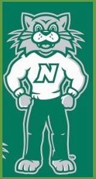

Home
EMPLOYEMENT
CONTACT
LOGOUT ADMIN
LOGIN USER
ADMIN HOME
MANAGE USERS
POST JOBS
VIEW/EDIT JOBS

You can now apply online by clicking on the job title you are interested in and clicking on the "Apply" link! If this is the first time you are applying using our online job application, you will need to create an account and select a Username and Password. After your account has been established, you can build an application by clicking on the "Build Job Application" link. This application can be saved and used to apply for more than one job opening.You can now apply online by clicking on the job title you are interested in and clicking on the "Apply" link! If this is the first time you are applying using our online job application, you will need to create an account and select a Username and Password. After your account has been established, you can build an application by clicking on the "Build Job Application" link.
>